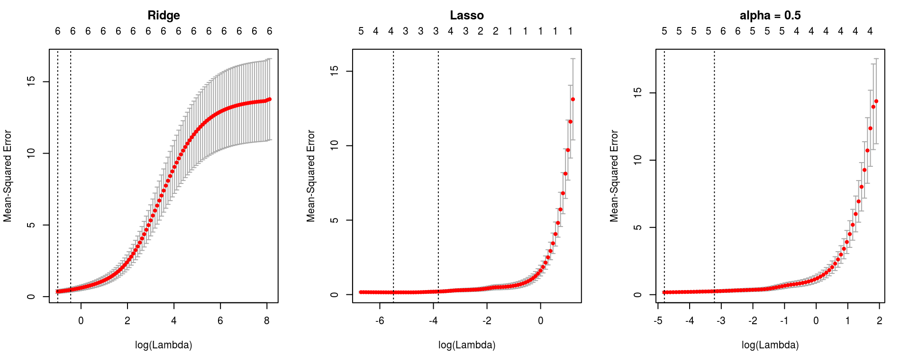

Neste trabalho prático será aplicado o método Regularização, onde penalizamos o algoritmo de estimação dos betas (a função custo) mantendo, assim, as estimativas dos parâmetros próximas a zero ou nulas.
Existem várias definições de como regularizar os parâmetros a serem estimados ou penalizar a função custo, em geral, eles se diferem na forma de imposição deste custo. O caso mais comumente utilizado é penalizar o algoritmo de estimação da seguinte forma:
\[ \underset{\underline{\beta}}{min} \frac{1}{2n}\sum_{i = 1}^n (y_i - X\beta)^2 + \lambda \{ (1 - \alpha) ||\beta||_2^2/2 + \alpha ||\beta||_1 \} \]
onde o penalty é dado por \(\lambda \{ (1 - \alpha) ||\beta||_2^2/2 + \alpha ||\beta||_1 \}\). Neste trabalho o foco será na regularização por penalização Ridge, onde \(\alpha\) é igual a 0 e na regularização por penalização Lasso, onde \(\alpha\) é igual a 1. Em ambos os casos quanto maior o valor de \(\beta\) maior será sua penalização, ainda se tomarmos \(0 \leq \alpha \leq 1\) temos uma mescla das abordagens Ridge e Lasso (chamada de Elastic-Net). Quanto ao multiplicador \(\lambda\) far-se-á um estudo sobre seu impacto na estimativas dos parâmetros.
Felizmente temos a implementação do algoritmo de Regularização, da forma como apresentada, no software estatístico R. O método computacional esta disponível na biblioteca [glmnet], provida pela empresa Revolution Analytics, onde temos métodos para ajuste de modelos lineares generalizados, modelos de sobrevivência, entre outros sob penalizações definidas pelo usuário.
Os dados considerados para aplicação do método é denominado por longley, disponível no pacote datasets. Este conjunto de dados refere-se a um estudo de macroeconomia onde temos 7 variáveis avaliadas em 16 anos consecutivos, de 1947 a 1962.
No R o conjunto de dados tem estrutura conforme output abaixo:
str(longley)## 'data.frame': 16 obs. of 7 variables:
## $ GNP.deflator: num 83 88.5 88.2 89.5 96.2 ...
## $ GNP : num 234 259 258 285 329 ...
## $ Unemployed : num 236 232 368 335 210 ...
## $ Armed.Forces: num 159 146 162 165 310 ...
## $ Population : num 108 109 110 111 112 ...
## $ Year : int 1947 1948 1949 1950 1951 1952 1953 1954 1955 1956 ...
## $ Employed : num 60.3 61.1 60.2 61.2 63.2 ...O modelo considerado aqui será o modelo gaussiano considerando Employed como variável de interesse e todas as demais como explicativas. Conforme Abaixo
\[ Employed \mid X \sim Normal(\hat{\mu}, \hat{\sigma}^2) \\ \hat{\mu} = X\underline{\beta} \]
onde a matriz X compreende todas as 6 variáveis explicativas e portanto tem dimensão 16x7 (6 \(\beta\)’s associados as covariáveis e intercepto \(\beta_0\)). Portanto para o modelo descrito serão estimados 8 parâmetros (7 de regressão e o \sigma^2).
Abaixo ajustamos os modelos:
m0lm: Modelo gaussiano de regressão múltipla;m0ridge: Modelo gaussiano de regressão múltipla com penalização Ridge;m0lasso: Modelo gaussiano de regressão múltipla com penalização Lasso; em0elnet: Modelo gaussiano de regressão múltipla com penalização dada por \(\alpha = 0.5\)##----------------------------------------------------------------------
## Preditor adotado
preditor <- Employed ~ .
data <- longley
##-------------------------------------------
## Via LM (Linear Models)
m0lm <- lm(preditor, data = data)
##-------------------------------------------
## Via Reguralização
library(glmnet)
## É ncessário informar as matrizes X e y
X <- model.matrix(preditor, data = data)
y <- longley$Employed
## Regularização Ridge
m0ridge <- cv.glmnet(x = X, y = y, family = "gaussian", alpha = 0,
grouped = FALSE)
## Regularização Ridge
m0lasso <- cv.glmnet(x = X, y = y, family = "gaussian", alpha = 1,
grouped = FALSE)
## Regularização Elastic Net (com alpha = 0.5)
m0elnet <- cv.glmnet(x = X, y = y, family = "gaussian", alpha = 0.5,
grouped = FALSE)Os objetos m0ridge, m0lasso e m0net tem classe cv.glmnet e para estas classes o pacote dispõe de vários métodos. Utilizaremos alguns deles para verificar o ajuste do modelos modelos. Note que utilzamos a função cv.glmnet o cv vem das iniciais Cross Validation, utilizando esta função o próprio algoritmo programada já sugere a melhor opção para \(\lambda\) a ser utilizada, segundo o critério implementado (Erro quadrático médio da validação cruzada).
Essas funções de estimação providas no pacote glmnet ajustam, por padrão, modelos com diferentes \(\lambda\)’s na penalização. É utilizado uma sequência de 100 valores escolhidos com base na escala da variável resposta e no método utilizado ($). Nos objetos de classe cv.glmnet temos a função plot que apresenta o critério utilizado para escolha do \(\lambda\).
par(mfrow = c(1, 3))
plot(m0ridge); title("Ridge", line = 2.5)
plot(m0lasso); title("Lasso", line = 2.5)
plot(m0elnet); title("alpha = 0.5", line = 2.5)
Com base nestes gráficos nota-se que o valor de \(\lambda\) sugerido, que minimiza o erro de validação cruzada é 0,3671, 0,0041, 0,0082 para os modelos com penalização Ridge, Lasso, e Elastic Net (\(\lambda = 0.5\)), ainda é apresentado (segunda linha vertical) o maior valor de \(\lambda\) que está no intervalo de um erro padrão do erro quadrático médio de validação que resultou nos valores 0,6414, 0,022, 0,0401.
Abaixo como comparação apresentamos os parâmetros estimados em ambos os métodos.
Primeiro apresentamos abaixo a comparação dos coeficientes estimados utilizando o \(\lambda\) que minimiza o erro de validação cruzada e o \(\lambda\) máximo pertencente ao intervalo de um erro padrão do erro de validação cruzada.
## cbind(coef(m0lm), coef(m0ridge), coef(m0lasso), coef(m0elnet))
coefRidge <- cbind("RIDGE-MIN" = coef(m0ridge, s = "lambda.min")[-2],
"RIDGE-1SE" = coef(m0ridge, s = "lambda.1se")[-2])
coefLasso <- cbind("LASSO-MIN" = coef(m0lasso, s = "lambda.min")[-2],
"LASSO-1SE" = coef(m0lasso, s = "lambda.1se")[-2])
coefElnet <- cbind("ELNET-MIN" = coef(m0elnet, s = "lambda.min")[-2],
"ELNET-1SE" = coef(m0elnet, s = "lambda.1se")[-2])
compareCoefs <- cbind(coefRidge, coefLasso, coefElnet)
rownames(compareCoefs) <- coef(m0elnet)@Dimnames[[1]][-2]
knitr::kable(compareCoefs, align = rep("c", 6), digits = 3)| RIDGE-MIN | RIDGE-1SE | LASSO-MIN | LASSO-1SE | ELNET-MIN | ELNET-1SE | |
|---|---|---|---|---|---|---|
| (Intercept) | -363.081 | -324.641 | -1965.218 | -1688.492 | -1640.815 | -761.290 |
| GNP.deflator | 0.083 | 0.079 | 0.000 | 0.000 | 0.025 | 0.046 |
| GNP | 0.011 | 0.010 | 0.000 | 0.001 | 0.000 | 0.016 |
| Unemployed | -0.007 | -0.005 | -0.014 | -0.013 | -0.014 | -0.010 |
| Armed.Forces | -0.001 | 0.000 | -0.008 | -0.006 | -0.007 | -0.005 |
| Population | 0.120 | 0.117 | -0.065 | 0.000 | 0.000 | 0.000 |
| Year | 0.207 | 0.187 | 1.046 | 0.900 | 0.875 | 0.419 |
Note na tabela que os valores, primeiramente olhando as colunas duas a duas (se foi pego o \(\lambda\) mínimo - -MIN ou o maior dentro do intervalo de 1 erro padrão - -1SE), dentre essas duas alternativas não vemos uma diferença muito discrepante das estimativas, porém perceba que sempre em -1SE temos uma estimativa mais próxima de zero do que a fornecida por -MIN, pois nestes casos a penalização é maior. Escolheremos o maior \(\lambda\), pois desejamos uma maior penalização. Agora comparando entre procedimentos de penalização RIDGE, LASSO e ELNET (com \(\lambda\) = 0,5) notamos maior diferença nas estimativas, note que no caso RIDGE as estimativas chegam próxima a zero, porém não são nulas, já nos casos LASSO e ELNET a nulidade já ocorre para alguns parâmetros.
Agora vamos a comparação com a tradicional metodologia já amplamente utilizada, a regressão gaussiana múltipla. Abaixo temos a comparação dos coeficientes estimatidas. Apresentamos somente as estimativas com penalização utilizando o maior \(\lambda\) sugerido.
coeflm <- cbind("LM" = coef(m0lm))
compareCoefs <- cbind(coeflm, compareCoefs[, seq(2, 6, 2)])
colnames(compareCoefs) <- c("LINEAR", "RIDGE", "LASSO", "ELNET")
knitr::kable(compareCoefs, align = rep("c", 4), digits = 3)| LINEAR | RIDGE | LASSO | ELNET | |
|---|---|---|---|---|
| (Intercept) | -3482.259 | -324.641 | -1688.492 | -761.290 |
| GNP.deflator | 0.015 | 0.079 | 0.000 | 0.046 |
| GNP | -0.036 | 0.010 | 0.001 | 0.016 |
| Unemployed | -0.020 | -0.005 | -0.013 | -0.010 |
| Armed.Forces | -0.010 | 0.000 | -0.006 | -0.005 |
| Population | -0.051 | 0.117 | 0.000 | 0.000 |
| Year | 1.829 | 0.187 | 0.900 | 0.419 |
Os valores estimados são razoavelmente distintos, porém note que a regressão LASSO toma a nulidade do parâmetros relacionados as variáveis GNP.deflator, GNP e Population. Verificando o teste de significância para estes parâmetros no modelo linear gaussiano temos:
## summary(m0lm)
## Para usar kable
est = coef(summary(m0lm))[, "Estimate"]
sdt = coef(summary(m0lm))[, "Std. Error"]
tval = est/sdt
pval = 2*pt(abs(tval), df = m0lm$df.residual, lower = FALSE)
mysummary <- cbind(Estimate = est, Std.Error = sdt,
"t value" = tval, "P(>|t|)" = pval)
knitr::kable(mysummary, align = rep("c", 4), digits = 3)| Estimate | Std.Error | t value | P(>|t|) | |
|---|---|---|---|---|
| (Intercept) | -3482.259 | 890.420 | -3.911 | 0.004 |
| GNP.deflator | 0.015 | 0.085 | 0.177 | 0.863 |
| GNP | -0.036 | 0.033 | -1.070 | 0.313 |
| Unemployed | -0.020 | 0.005 | -4.136 | 0.003 |
| Armed.Forces | -0.010 | 0.002 | -4.822 | 0.001 |
| Population | -0.051 | 0.226 | -0.226 | 0.826 |
| Year | 1.829 | 0.455 | 4.016 | 0.003 |
Portanto, nota-se que a regressão por penalização LASSO fez, neste caso, o trabalho manual que seria de retirar estas as variáveis do modelo e reajustá-lo.
cat(format(Sys.time(),
format = "Atualizado em %d de %B de %Y.\n\n"))## Atualizado em 08 de agosto de 2016.sessionInfo()## R version 3.3.1 (2016-06-21)
## Platform: x86_64-pc-linux-gnu (64-bit)
## Running under: Ubuntu 14.04.5 LTS
##
## locale:
## [1] LC_CTYPE=en_US.UTF-8 LC_NUMERIC=C
## [3] LC_TIME=pt_BR.UTF-8 LC_COLLATE=en_US.UTF-8
## [5] LC_MONETARY=pt_BR.UTF-8 LC_MESSAGES=en_US.UTF-8
## [7] LC_PAPER=pt_BR.UTF-8 LC_NAME=C
## [9] LC_ADDRESS=C LC_TELEPHONE=C
## [11] LC_MEASUREMENT=pt_BR.UTF-8 LC_IDENTIFICATION=C
##
## attached base packages:
## [1] parallel stats graphics grDevices utils datasets methods
## [8] base
##
## other attached packages:
## [1] glmnet_2.0-5 foreach_1.4.3 Matrix_1.2-6
## [4] mboost_2.6-0 stabs_0.5-1 knitr_1.12.3
## [7] latticeExtra_0.6-28 RColorBrewer_1.1-2 lattice_0.20-33
##
## loaded via a namespace (and not attached):
## [1] magrittr_1.5 MASS_7.3-45 splines_3.3.1
## [4] nnls_1.4 quadprog_1.5-5 multcomp_1.4-5
## [7] highr_0.5.1 stringr_1.0.0 tools_3.3.1
## [10] grid_3.3.1 TH.data_1.0-7 iterators_1.0.8
## [13] modeltools_0.2-21 htmltools_0.3 yaml_2.1.13
## [16] survival_2.39-4 digest_0.6.9 party_1.0-25
## [19] formatR_1.3 codetools_0.2-14 strucchange_1.5-1
## [22] evaluate_0.9 rmarkdown_0.9.6 coin_1.1-2
## [25] sandwich_2.3-4 stringi_1.0-1 compiler_3.3.1
## [28] stats4_3.3.1 mvtnorm_1.0-5 zoo_1.7-13